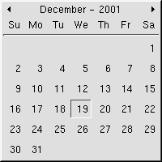

Special Attributes
Date
The date field is very unique to the point that the date format can be defined in preferences. The date may be involked in many ways including:
- D or d
- Enter "D" or "d" followed by the tab key to select the current date.
- X days ago
- Enter "X days ago" where X is the number of days ago. For example, entering "10 days ago" followed by the tab key will select the date 10 days prior to the current date.
- Day/Month
- Entering the day and month only will select the day and month in the current year. For example, to select "10 August 2000" your can enter either "10 Aug", "10 August", "Aug 10", or "August 10".
- day/month/year
- Enter the day month and year. For example, "10 Aug 2000", "10/Aug/2000"
Date Lookup
Click on the calander icon to view the calander lookup window. Below is an example of the calander icon as displayed in the journal entry window.
Below is an example of entering the calander lookup window as at Sept 1, 2000.

You can click on a date to select it. Click on the arrows to move forward or backwards through the calander year. Alternatively, you can use the up, down, left or right arrow keys to move through the month or calander year. The space bar or enter key will select the high-lighted date.